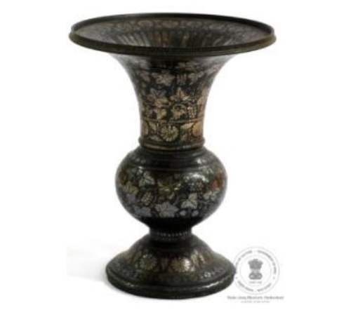

🔇 Is bhasha me is vastu ka audio abhi uplabdh nahi hai.
अभिग्रहण संख्या: XXXIII-221 पीकदान

अभिग्रहण संख्या: XXXIII-221
यह बड़े आकार का पीकदान चाँदी और जस्ता मिश्रधातु से बना है। इस पर चाँदी की जड़ाई से फूलों और बेलों के सुंदर नमूने बनाए गए हैं। इसके मुख के भीतर भी जड़ाई की गई है तथा बाहरी भाग पर सादी पट्टी बनी हुई है।
तंबाकू और पान-सुपारी खाने वाले लोग अपने उपयोग के लिए ऐसे विशेष पीकदान रखते थे। इस पीकदान पर फूलों और अंगूर की बेल के आकर्षक नमूने बनाए गए हैं। इन आकृतियों को पहले धातु की सतह पर गहराई से उकेरा गया, फिर उनमें चाँदी के तार या छोटे टुकड़े जड़ दिए गए। काली पृष्ठभूमि पर चमकती चाँदी की सजावट बहुत स्पष्ट दिखाई देती है। यह कलाकृति कर्नाटक के बीदर की प्रसिद्ध धातुकला का उत्कृष्ट उदाहरण है और इसका निर्माण ईस्वी 19वीं शताब्दी में हुआ माना जाता है।
Acc No: XXXIII-221 Spittoon (Pikdan)
Acc No: XXXIII-221
A large spittoon (Pikdan) featuring intricate silver floral inlay work. The inner rim of the mouth displays fluted silver designs, while the exterior body is decorated with floral vines and grapevines. Crafted from zinc alloy and silver.
Personal spittoons were specially crafted for individuals accustomed to chewing betel nut and tobacco. The metal body was deeply engraved before silver wires or sheets were hammered into the grooves. The brilliant silver motifs stand out strikingly against the dark black background. The outer rim of the mouth is left plain, a unique feature of this piece. Originating from Bidar, Karnataka, India, it dates to the 19th century CE.
9. తమ్మతొట్టి / ఉమ్మిపాత్ర
Acc No: XXXIII-221
వెండి పూల డిజైన్తో కూడిన పెద్ద ఉమ్మిపాత్ర /తమ్మతొట్టి (Spittoon ) పాత్ర. దాని నోటి భాగం గాడులతో పొదిగి ఉంది. పాత్ర శరీరం పూల తీగల డిజైన్ను కలిగి ఉంది. ఈ ఉమ్మివేసే పాత్రను వెండి మరియు జింక్ మిశ్రమలోహంతో తయారు చేశారు.
పొగాకు, పోకచెక్కలను తినడం అలవాటు ఉన్నవాఋ కోసం ప్రత్యేకంగా రూపొందించిన వ్యక్తిగత ఉమ్మిపాత్రలు (Spittoon ) రూపొందించుకునేవారు. ఈ పెద్ద పరిమాణంలో ఉన్న ఉమ్మిపాత్రపై పువ్వులు మరియు ద్రాక్ష తీగల నమూనాతో వెండి పొదిగి ఉంది. ఈ డిజైన్లను లోహపు పీఠంపై లోతుగా చెక్కారు మరియు దానిలో వెండి దారాలు లేదా ముక్కలను అమర్చారు. ప్రకాశవంతమైన వెండి డిజైన్, దానికి భిన్నంగా ఉన్న నల్లని నేపథ్యంపై స్పష్టంగా కనిపిస్తుంది. ఈ ఉమ్మిపాత్ర యొక్క నోటి బయటి భాగంలో ఒక సాదా గుర్తు ఉండటం దీని ప్రత్యేక గుర్తింపు. ఈ వస్తువు యొక్క కళారూపం భారతదేశంలోని కర్ణాటక రాష్ట్రంలోని బీదర్కు చెందినది మరియు ఇది క్రీ.శ. 19వ శతాబ్దానికి చెందినదిగా గుర్తించబడింది.
పొగాకు, పోకచెక్కలను తినడం అలవాటు ఉన్నవాఋ కోసం ప్రత్యేకంగా రూపొందించిన వ్యక్తిగత ఉమ్మిపాత్రలు (Spittoon ) రూపొందించుకునేవారు. ఈ పెద్ద పరిమాణంలో ఉన్న ఉమ్మిపాత్రపై పువ్వులు మరియు ద్రాక్ష తీగల నమూనాతో వెండి పొదిగి ఉంది. ఈ డిజైన్లను లోహపు పీఠంపై లోతుగా చెక్కారు మరియు దానిలో వెండి దారాలు లేదా ముక్కలను అమర్చారు. ప్రకాశవంతమైన వెండి డిజైన్, దానికి భిన్నంగా ఉన్న నల్లని నేపథ్యంపై స్పష్టంగా కనిపిస్తుంది. ఈ ఉమ్మిపాత్ర యొక్క నోటి బయటి భాగంలో ఒక సాదా గుర్తు ఉండటం దీని ప్రత్యేక గుర్తింపు. ఈ వస్తువు యొక్క కళారూపం భారతదేశంలోని కర్ణాటక రాష్ట్రంలోని బీదర్కు చెందినది మరియు ఇది క్రీ.శ. 19వ శతాబ్దానికి చెందినదిగా గుర్తించబడింది.
۹. اگال دان
اندراج نمبر: XXXIII-221
یہ بڑے سائز کا اُگال دان چاندی کی جڑائی سے مزین ہے۔ اس کے منہ کے اندرونی حصے میں ابھری ہوئی دھاریاں بنائی گئی ہیں، جبکہ جسم پر پھولوں اور بیل بوٹوں کے خوب صورت نقش نمایاں ہیں۔ یہ اُگال دان چاندی اور جست کے مرکب دھات سے تیار کیا گیا ہے۔
تمباکو اور پان سپاری استعمال کرنے والوں کے لیے خصوصی طور پر ذاتی اُگال دان تیار کیے جاتے تھے۔ یہ بڑا اُگال دان پھولوں اور انگور کی بیل کے دلکش نقش سے آراستہ ہے۔ ان نقشوں کو دھات کی سطح پر گہرائی سے کندہ کیا گیا، پھر ان میں چاندی کی باریک تاریں اور ٹکڑے جڑ کر نفیس آرائش کی گئی۔ چمکتی ہوئی چاندی کے یہ نقش سیاہ پس منظر پر نہایت نمایاں اور دلکش دکھائی دیتے ہیں۔ اس اُگال دان کی ایک خاص پہچان یہ ہے کہ اس کے منہ کا بیرونی حصہ سادہ رکھا گیا ہے، جو اس کے نقش دار جسم کے ساتھ ایک خوب صورت توازن پیدا کرتا ہے۔ یہ فن بیدر، کرناٹک، ہندوستان کی بیدری فن کاری سے تعلق رکھتا ہے اور انیسویں صدی عیسوی سے منسوب ہے۔
تمباکو اور پان سپاری استعمال کرنے والوں کے لیے خصوصی طور پر ذاتی اُگال دان تیار کیے جاتے تھے۔ یہ بڑا اُگال دان پھولوں اور انگور کی بیل کے دلکش نقش سے آراستہ ہے۔ ان نقشوں کو دھات کی سطح پر گہرائی سے کندہ کیا گیا، پھر ان میں چاندی کی باریک تاریں اور ٹکڑے جڑ کر نفیس آرائش کی گئی۔ چمکتی ہوئی چاندی کے یہ نقش سیاہ پس منظر پر نہایت نمایاں اور دلکش دکھائی دیتے ہیں۔ اس اُگال دان کی ایک خاص پہچان یہ ہے کہ اس کے منہ کا بیرونی حصہ سادہ رکھا گیا ہے، جو اس کے نقش دار جسم کے ساتھ ایک خوب صورت توازن پیدا کرتا ہے۔ یہ فن بیدر، کرناٹک، ہندوستان کی بیدری فن کاری سے تعلق رکھتا ہے اور انیسویں صدی عیسوی سے منسوب ہے۔
অ্যাক্সেস নং: XXXIII-221 পিকদানি
अभिग्रहण संख्या: XXXIII-221
এটি একটি বড় আকারের পিকদানি, যাতে রূপার কাজ ও ফুলের নকশা খচিত রয়েছে। এর মুখের ভেতরের অংশে খাঁজকাটা নকশা এবং বাইরের গায়ে লতাপাতা ও ফুলের নকশা রয়েছে। পিকদানিটি রূপা ও দস্তার সংকর ধাতু দিয়ে তৈরি।
যারা নিয়মিত তামাক ও সুপারি সেবন করতেন, তাদের জন্য বিশেষ নকশা করা ব্যক্তিগত পিকদানি ব্যবহারের প্রচলন ছিল। বড় আকারের এই পিকদানিটিতে রূপার সাহায্যে ফুল ও আঙুরলতার নকশা ফুটিয়ে তোলা হয়েছে। ধাতব কাঠামোর ওপর গভীর করে নকশা খোদাই করে তাতে রূপার পাত বসানো হয়েছে। কালো পটভূমির বিপরীতে উজ্জ্বল রূপালি নকশাটি অত্যন্ত স্পষ্টভাবে ফুটে উঠেছে। এর মুখের বাইরের দিকের অংশটি মসৃণ রাখা হয়েছে, যা এই পিকদানির একটি বিশেষ বৈশিষ্ট্য। এই শিল্পকর্মটি ভারতের কর্ণাটক রাজ্যের বিদার অঞ্চলের এবং এটি ঊনবিংশ শতাব্দীর নিদর্শন।
Acc No: XXXIII-221 પીકદાન / પિચકારી
अभिग्रहण संख्या: XXXIII-221
ચાંદીની ફૂલની ભાતવાળી મોટી સાઇઝની પીકદાન. મોંની અંદરની બાજુએ ખાંચો (ફ્લુટિંગ) જડેલી છે. શરીર પર ફૂલની વેલની ડિઝાઇન છે. આ પીકદાન ચાંદી અને ઝિંક એલોય (જસતની મિશ્રધાતુ)માંથી બનાવવામાં આવી છે.
તમાકુ અને સોપારી ખાવાની ટેવ ધરાવતા લોકો માટે ખાસ રીતે ડિઝાઇન કરેલી અંગત પીકદાનો બનાવવામાં આવતી હતી. ચાંદીમાં ફૂલો અને દ્રાક્ષની વેલની ભાત જડેલી આ મોટી સાઇઝની પીકદાન ખાસ ધ્યાન ખેંચે છે. ધાતુના આધારમાં ઊંડે સુધી ડિઝાઇનો કોતરવામાં આવતી હતી અને તેમાં ચાંદીના તાર કે ટુકડાઓ બેસાડવામાં આવતા હતા. કાળી પૃષ્ઠભૂમિ (બેકગ્રાઉન્ડ) વિરુદ્ધ ચમકતી ચાંદીની ડિઝાઇન સ્પષ્ટપણે અલગ તરી આવે છે. આ પીકદાનની વિશેષ ઓળખ એ છે કે તેના મોંની બહારની બાજુ સાદી છે. આ કલાત્મક વસ્તુ બિદર, કર્ણાટક, ભારતની છે અને તે ઈ.સ. ૧૯મી સદીની છે.
Acc No: XXXIII-221 ಸ್ಪಿಟ್ಟೂನ್/ಪಿಕದಾನಿ
अभिग्रहण संख्या: XXXIII-221
ಹೂವಿನ ವಿನ್ಯಾಸಗಳೊಂದಿಗೆ ಬೆಳ್ಳಿಯ ಕುಸುರಿ ಕೆಲಸವನ್ನು ಹೊಂದಿರುವ ದೊಡ್ಡ ಗಾತ್ರದ ಪಿಕದಾನಿ (ಉಗುಳುವ ಪಾತ್ರೆ) ಇದಾಗಿದೆ. ಬಾಯಿಯ ಒಳಭಾಗದಲ್ಲಿ ಉಬ್ಬು ಗೆರೆಗಳ ಕುಸುರಿ ಕೆಲಸ ಮಾಡಲಾಗಿದೆ. ದೇಹದ ಮೇಲೆ ಹೂವಿನ ಬಳ್ಳಿಯ ವಿನ್ಯಾಸವಿದೆ. ಈ ಪಿಕದಾನಿಯನ್ನು ಬೆಳ್ಳಿ ಮತ್ತು ಸತುವಿನ ಮಿಶ್ರಲೋಹದಿಂದ ಮಾಡಲಾಗಿದೆ.
ತಂಬಾಕು ಮತ್ತು ಅಡಿಕೆ ತಿನ್ನುವ ಅಭ್ಯಾಸವಿರುವವರು ವಿಶೇಷವಾಗಿ ವಿನ್ಯಾಸಗೊಳಿಸಿದ ವೈಯಕ್ತಿಕ ಪಿಕದಾನಿಗಳನ್ನು ಹೊಂದಿದ್ದರು. ಈ ದೊಡ್ಡ ಗಾತ್ರದ ಪಿಕದಾನಿಯು ಹೂವುಗಳು ಮತ್ತು ದ್ರಾಕ್ಷಿ ಬಳ್ಳಿಯ ನಮೂನೆಯೊಂದಿಗೆ ಬೆಳ್ಳಿಯ ಕುಸುರಿ ಕೆಲಸ ಹೊಂದಿದೆ. ಲೋಹದ ತಳಭಾಗದೊಳಗೆ ವಿನ್ಯಾಸಗಳನ್ನು ಆಳವಾಗಿ ಕೆತ್ತಿ, ಅದರೊಳಗೆ ಬೆಳ್ಳಿಯ ತಂತಿಗಳು ಅಥವಾ ಚೂರುಗಳನ್ನು ಕೂಡಿಸಲಾಗಿತ್ತು. ಕಾಂಟ್ರಾಸ್ಟ್ ಕಪ್ಪು ಹಿನ್ನೆಲೆಯ ವಿರುದ್ಧ ಈ ಹೊಳೆಯುವ ಬೆಳ್ಳಿಯ ವಿನ್ಯಾಸವು ಎದ್ದು ಕಾಣುತ್ತದೆ. ಬಾಯಿಯ ಹೊರಭಾಗವು ಸರಳವಾಗಿರುವುದು (ಪ್ಲೇನ್) ಈ ಪಿಕದಾನಿಯ ವಿಶೇಷ ಗುರುತಾಗಿದೆ. ಈ ವಸ್ತುವಿನ ಕಲಾಶೈಲಿಯು ಭಾರತದ ಕರ್ನಾಟಕದ ಬೀದರ್ಗೆ ಸೇರಿದ್ದಾಗಿದ್ದು, ಇದನ್ನು ಕ್ರಿ.ಶ. 19ನೇ ಶತಮಾನದ್ದೆಂದು ಅಂದಾಜಿಸಲಾಗಿದೆ.
୯. ପିକଦାନୀ (Spittoon)
Acc No: XXXIII-221
ଏହା ଏକ ବଡ଼ ଆକାରର ପିକଦାନୀ, ଯେଉଁଥିରେ ରୂପାରେ ସୁନ୍ଦର ଫୁଲ ଡିଜାଇନ୍ କରାଯାଇଛି। ଏହି ପାତ୍ରଟିର ମୁହଁ ଭିତର ପଟେ ଫ୍ଲୁଟିଙ୍ଗ୍ ବା ଉଠାଣିଆ ରେଖାଗୁଡ଼ିକରେ ରୂପା ଖଚିତ ହୋଇଛି ଏବଂ ଶରୀରରେ ଫୁଲ ଲତାର ଡିଜାଇନ୍ ରହିଛି। ଏହି ପିକଦାନୀଟି ରୂପା ଏବଂ ଜିଙ୍କ୍ ମିଶ୍ରଣରେ ତିଆରି।
ପୂର୍ବକାଳରେ ଯେଉଁମାନେ ତମାଖୁ ଏବଂ ପାନ ଖାଇବାର ଅଭ୍ୟାସ ରଖିଥିଲେ, ସେମାନଙ୍କ ପାଇଁ ଏଭଳି ସ୍ୱତନ୍ତ୍ର ବ୍ୟକ୍ତିଗତ ପିକଦାନୀ ତିଆରି କରାଯାଉଥିଲା। ଏହି ବଡ଼ ଆକାରର ପିକଦାନୀଟିରେ ରୂପାରେ ଫୁଲ ଏବଂ ଆଙ୍ଗୁଳି ଲତାର ପାଟର୍ନ ଜଡ଼ିତ ହୋଇଛି। ଧାତବ ଆଧାର ଭିତରେ ଗଭୀର ଭାବରେ ଖୋଦନ କରାଯାଇ ସେଥିରେ ରୂପା ତାର କିମ୍ବା ଖଣ୍ଡଗୁଡ଼ିକୁ ସୁନ୍ଦର ଭାବରେ ବସାଯାଇଥାଏ। ଏହାର କଳା ପୃଷ୍ଠଭୂମି ଉପରେ ଉଜ୍ୱଳ ରୂପା ଡିଜାଇନ୍ ଟି ଏକାବେଳେ ସ୍ପଷ୍ଟ ଭାବରେ ଫୁଟି ଦେଖାଯାଏ। ଏହି ପିକଦାନୀର ଏକ ସ୍ୱତନ୍ତ୍ର ପରିଚୟ ହେଉଛି ଏହାର ମୁହଁର ବାହ୍ୟ ପାର୍ଶ୍ୱ, ଯାହାକି ସଂପୂର୍ଣ୍ଣ ଭାବରେ ସାଧାରଣ ରହିଛି। ଏହି କଳାକୃତିଟି କର୍ଣ୍ଣାଟକର 'ବିଦର୍' ସହରର ଏବଂ ଜଣାଯାଏ ଯେ ଏହା ଖ୍ରୀଷ୍ଟାବ୍ଦ ୧୯ଶ ଶତାବ୍ଦୀର।
ପୂର୍ବକାଳରେ ଯେଉଁମାନେ ତମାଖୁ ଏବଂ ପାନ ଖାଇବାର ଅଭ୍ୟାସ ରଖିଥିଲେ, ସେମାନଙ୍କ ପାଇଁ ଏଭଳି ସ୍ୱତନ୍ତ୍ର ବ୍ୟକ୍ତିଗତ ପିକଦାନୀ ତିଆରି କରାଯାଉଥିଲା। ଏହି ବଡ଼ ଆକାରର ପିକଦାନୀଟିରେ ରୂପାରେ ଫୁଲ ଏବଂ ଆଙ୍ଗୁଳି ଲତାର ପାଟର୍ନ ଜଡ଼ିତ ହୋଇଛି। ଧାତବ ଆଧାର ଭିତରେ ଗଭୀର ଭାବରେ ଖୋଦନ କରାଯାଇ ସେଥିରେ ରୂପା ତାର କିମ୍ବା ଖଣ୍ଡଗୁଡ଼ିକୁ ସୁନ୍ଦର ଭାବରେ ବସାଯାଇଥାଏ। ଏହାର କଳା ପୃଷ୍ଠଭୂମି ଉପରେ ଉଜ୍ୱଳ ରୂପା ଡିଜାଇନ୍ ଟି ଏକାବେଳେ ସ୍ପଷ୍ଟ ଭାବରେ ଫୁଟି ଦେଖାଯାଏ। ଏହି ପିକଦାନୀର ଏକ ସ୍ୱତନ୍ତ୍ର ପରିଚୟ ହେଉଛି ଏହାର ମୁହଁର ବାହ୍ୟ ପାର୍ଶ୍ୱ, ଯାହାକି ସଂପୂର୍ଣ୍ଣ ଭାବରେ ସାଧାରଣ ରହିଛି। ଏହି କଳାକୃତିଟି କର୍ଣ୍ଣାଟକର 'ବିଦର୍' ସହରର ଏବଂ ଜଣାଯାଏ ଯେ ଏହା ଖ୍ରୀଷ୍ଟାବ୍ଦ ୧୯ଶ ଶତାବ୍ଦୀର।
९. पिकदाणी
कार्यवाही क्र: XXXIII-221
फुलांच्या नक्षीसह चांदीचे जडाव काम असलेली मोठ्या आकाराची पिकदाणी. तोंडाच्या आतल्या बाजूला उठावदार नक्षीचे जडाव काम आहे. मुख्य भागावर फुलांच्या वेलींची नक्षी आहे. ही पिकदाणी चांदी आणि जस्ताच्या मिश्रधातूपासून बनवली आहे.
ज्यांना तंबाखू आणि सुपारी खाण्याची सवय होती, त्यांच्यासाठी विशेष डिझाइन केलेल्या वैयक्तिक पिकदाण्या असत. या मोठ्या आकाराच्या पिकदाणीवर फुले आणि द्राक्षांच्या वेलींच्या नक्षीसह चांदीचे जडाव काम केले आहे. धातूच्या मूळ भागात खोलवर नक्षी कोरून त्यात चांदीच्या तारा किंवा तुकडे जडवले होते. काळ्या रंगाच्या पार्श्वभूमीवर ही चमकदार चांदीची नक्षी अगदी स्पष्टपणे उठून दिसते. या पिकदाणीची विशेष ओळख म्हणजे तिच्या तोंडाची बाहेरील बाजू साधी आहे. या वस्तूचा कलाप्रकार बिदर, कर्नाटक, भारत येथील असून ती इ.स. १९ व्या शतकातील आहे.
ज्यांना तंबाखू आणि सुपारी खाण्याची सवय होती, त्यांच्यासाठी विशेष डिझाइन केलेल्या वैयक्तिक पिकदाण्या असत. या मोठ्या आकाराच्या पिकदाणीवर फुले आणि द्राक्षांच्या वेलींच्या नक्षीसह चांदीचे जडाव काम केले आहे. धातूच्या मूळ भागात खोलवर नक्षी कोरून त्यात चांदीच्या तारा किंवा तुकडे जडवले होते. काळ्या रंगाच्या पार्श्वभूमीवर ही चमकदार चांदीची नक्षी अगदी स्पष्टपणे उठून दिसते. या पिकदाणीची विशेष ओळख म्हणजे तिच्या तोंडाची बाहेरील बाजू साधी आहे. या वस्तूचा कलाप्रकार बिदर, कर्नाटक, भारत येथील असून ती इ.स. १९ व्या शतकातील आहे.
Acc No: XXXIII-221 കോളാമ്പി
Acc No: XXXIII-221
വെള്ളി കൊത്തുപണികളാൽ പൂക്കളുടെ ഡിസൈനുകൾ ചെയ്ത വലിയൊരു കോളാമ്പി. ഇതിന്റെ വായ് വട്ടത്തിന് ഉള്ളിലായി വരമ്പുകൾ പോലെയുള്ള വെള്ളി ഡിസൈനുകൾ കാണാം. പുറംഭാഗത്ത് പൂവള്ളികളുടെ രൂപങ്ങളാണ് നൽകിയിരിക്കുന്നത്. വെള്ളിയും സിങ്ക് ലോഹസങ്കരവും ചേർന്നൊരുക്കിയ ലോഹക്കൂട്ടുകൊണ്ടാണ് ഇത് നിർമ്മിച്ചിട്ടുള്ളത്.
മുറുക്കുന്ന ശീലമുള്ളവർക്കായി സവിശേഷമായി നിർമ്മിച്ച വ്യക്തിഗത കോളാമ്പികൾ അക്കാലത്തുണ്ടായിരുന്നു. വലിയ വലിപ്പമുള്ള ഈ കോളാമ്പിയിൽ പൂവള്ളികളും മുന്തിരിവള്ളികളും വെള്ളി കൊത്തുപണികളാൽ അലങ്കരിച്ചിരിക്കുന്നു. ഇതിന്റെ ലോഹഭാഗത്ത് ഡിസൈനുകൾ ആഴത്തിൽ കൊത്തിയെടുത്ത ശേഷം, അതിലേക്ക് വെള്ളിക്കമ്പികളോ കഷ്ണങ്ങളോ പതിച്ചു വെക്കുകയായിരുന്നു ചെയ്തത്. ഇതിന്റെ കറുത്ത പശ്ചാത്തലത്തിൽ നിന്ന് തിളങ്ങുന്ന വെള്ളി ഡിസൈനുകൾ വേറിട്ടു കാണാം. വായ് വട്ടത്തിന്റെ പുറംഭാഗത്ത് ഡിസൈനുകൾ ഒന്നുമില്ലാതെ ലളിതമായി നൽകിയിരിക്കുന്നു എന്നത് ഈ കോളാമ്പിയുടെ ഒരു സവിശേഷതയാണ്. ഇന്ത്യയിലെ കർണാടകയിലുള്ള ബിദാർ എന്ന പ്രദേശത്തെ നിർമ്മാണ ശൈലിയിലാണ് ഇത് ഒരുക്കിയിട്ടുള്ളത്. ഇത് എഡി 19-ാം നൂറ്റാണ്ടിലെ നിർമ്മിതിയാണെന്ന് കരുതപ്പെടുന്നു.
9. எச்சில் கலன் (Spittoon)
Acc No: XXXIII-221
பெரிய அளவிலான இந்த எச்சில் பாத்திரம் வெள்ளி மற்றும் துத்தநாகக் கலவையால் உருவாக்கப்பட்டுள்ளது. இதன் மேற்பரப்பில் வெள்ளிப் பதிப்பு நுட்பத்தில் மலர் வடிவ அலங்காரங்கள் செய்யப்பட்டுள்ளன. வாய்ப்பகுதியின் உட்புறத்தில் நீளவாட்டுப் பட்டை அலங்காரங்களும், உட்பகுதியில் மலர்க்கொடி வடிவ அலங்காரங்களும் காணப்படுகின்றன.
புகையிலை மற்றும் பாக்கு உண்ணும் பழக்கம் உள்ளவர்கள் தங்களுக்கென பிரத்யேகமாக வடிவமைக்கப்பட்ட தனிப்பட்ட எச்சில் பாத்திரங்களை வைத்திருந்தனர். பெரிய அளவிலான இந்த எச்சில் பாத்திரம் பூக்கள் மற்றும் திராட்சைக் கொடி வடிவங்கள் வெள்ளியால் பதிக்கப்பட்டுள்ளது. வடிவங்கள் உலோக அடிப்பகுதியில் ஆழமாக செதுக்கப்பட்டு, அதற்குள் வெள்ளி இழைகள் அல்லது துண்டுகள் பதிக்கப்பட்டுள்ளன. கருநிறப் பின்னணியில் வெள்ளி அலங்காரங்கள் மிகவும் தெளிவாகத் திகழ்கின்றன. வாய்ப் பகுதியின் வெளிப்புறத்தில் எளிய அமைப்பைக் கொண்டிருப்பது இந்த எச்சில் பாத்திரத்தின் சிறப்பு அடையாளமாகும். இந்தப் பொருளின் கலை வடிவம் இந்தியாவின் கர்நாடக மாநிலத்தில் உள்ள பீதரைச் சேர்ந்தது, மேலும் இது பத்தொன்பதாம் நூற்றாண்டைச் சேர்ந்ததாகக் கணிக்கப்படுகிறது.
புகையிலை மற்றும் பாக்கு உண்ணும் பழக்கம் உள்ளவர்கள் தங்களுக்கென பிரத்யேகமாக வடிவமைக்கப்பட்ட தனிப்பட்ட எச்சில் பாத்திரங்களை வைத்திருந்தனர். பெரிய அளவிலான இந்த எச்சில் பாத்திரம் பூக்கள் மற்றும் திராட்சைக் கொடி வடிவங்கள் வெள்ளியால் பதிக்கப்பட்டுள்ளது. வடிவங்கள் உலோக அடிப்பகுதியில் ஆழமாக செதுக்கப்பட்டு, அதற்குள் வெள்ளி இழைகள் அல்லது துண்டுகள் பதிக்கப்பட்டுள்ளன. கருநிறப் பின்னணியில் வெள்ளி அலங்காரங்கள் மிகவும் தெளிவாகத் திகழ்கின்றன. வாய்ப் பகுதியின் வெளிப்புறத்தில் எளிய அமைப்பைக் கொண்டிருப்பது இந்த எச்சில் பாத்திரத்தின் சிறப்பு அடையாளமாகும். இந்தப் பொருளின் கலை வடிவம் இந்தியாவின் கர்நாடக மாநிலத்தில் உள்ள பீதரைச் சேர்ந்தது, மேலும் இது பத்தொன்பதாம் நூற்றாண்டைச் சேர்ந்ததாகக் கணிக்கப்படுகிறது.